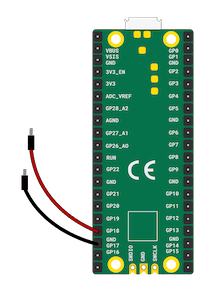
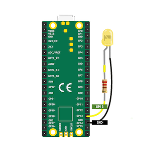

Le Raspberry Pi Pico est un microcontrôleur économique utilisé pour fabriquer des produits électroniques.
Les entrées et sorties que j'ai utilisées sont :
Entrées
- Interrupteur (switch)
- Bouton
- Potentiomètre
Sorties
- LED
- LED RVB
- Buzzer
Passez la souris sur les cartes pour en savoir plus :
Entrées
Interrupteur (switch)
Un interrupteur est un composant électrique qui peut être fermé pour permettre au courant électrique de circuler et ouvert pour empêcher le courant électrique de circuler.
Bouton

Un bouton est une sorte d’interrupteur qui établit une connexion lorsqu’il est enfoncé.
Potentiomètre

Un potentiomètre est un composant d'entrée analogique qui change sa résistance en fonction de la position du cadran.
Sorties
LED
LED signifie diode électroluminescente. Il possède un matériau qui s'illumine lorsqu'un courant électrique le traverse.
LED RVB
RVB signifie Rouge Vert Bleu. Les LED RVB vous permettent d'utiliser un code pour contrôler la quantité de chaque couleur émise.
Buzzer
Un buzzer passif peut émettre une variété de sons. Il nécessite une connexion et un signal spécifique pour jouer le son choisi.